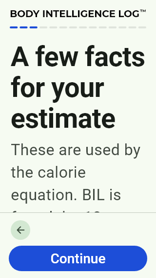
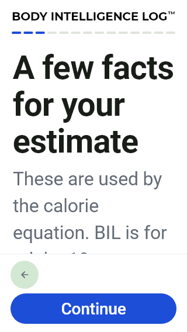
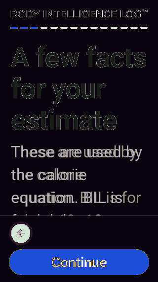
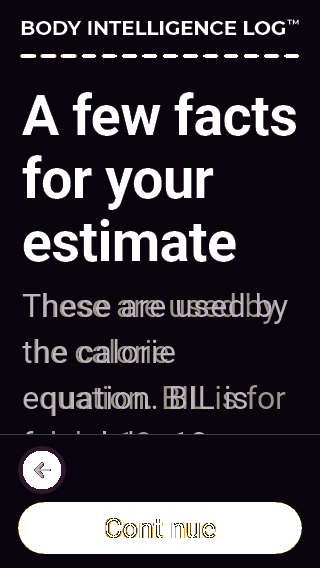

التصنيف المقترح: B. Facts EN 320/2x: الخلفية والفونت والهوامش تغيرت؛ النص الطويل يمتد تحت viewport القابل للتمرير في المرجعين، والزر ثابت؛ ليس إثبات قص غير قابل للوصول.
RobotoEvidence / BILArabic or NotoArabicEvidence; readable real glyphs
Baseline test/features/onboarding/goldens/onboarding_2026/facts_320x568_en_light_200.png, commit 230dd05eaf3238ba99270df2027cf984546880e4
Source: lib/features/onboarding/onboarding_page.dart:586
HOLD RED; main QA approves this exact pair individually. A: replace invalid font evidence only after signoff; B: verify intended source history and approve or reclassify C.
Same pixels as previous failed actual: True. Master unchanged, no approval.



